“None but those who have experienced them can conceive of the enticements of science… in scientific pursuit there is continual food for discovery and wonder.”
– Victor Frankenstein
dIn the introduction to Frankenstein, Shelley speaks of her nightmare inspiration. “I saw the hideous phantasm of a man stretched out, and then, on the working of some powerful engine, show signs of life, and stir with an uneasy, half vital motion. Frightful must it be; for supremely frightful would be the effect of any human endeavor to mock the stupendous mechanism of the Creator of the world.” The iconography of artificial, man-made beings coming to life, rising up from the ‘slab’, has been replicated time and time again. Shows like Westworld, for example, have brought this trope to a new audience.
There could be a future where an AI holds consciousness and thought processing power far greater than humans. Shelley explores this way before the development of Machine Learning. Frankenstein’s creation learns language, and how to speak through a hole in a cottage wall where he secretly watches a family interact with one another. He is the very embodiment of machine intelligence. He learns like an algorithm throughout the novel.
Where Frankenstein and AI Meet

In respect of Victor Frankenstein’s demise, it plays on the fears that AI could inevitably lead to our own destruction. It’s believed by some that the advent of the singularity will be a pivotal event in our future – where Artificial Intelligence and human intelligence are equal. This fleeting moment will soon pass as AI’s computing power and ability to learn at high speed will result in a growing intelligence – beyond human. Frankenstein’s creation does exactly this. His ability to process large amounts of information and learn so soon after his ‘birth’ into the world is much faster than that of a human.
Developing AI needs nurturing, like a developing child. It’s still in its infancy, and like Frankenstein’s creation – if left unsupervised, things can – and would – go very wrong. In a later chapter, Frankenstein’s creature reveals to Victor, “I was benevolent and good; misery made me a fiend. Make me happy, and I shall again be virtuous.” The ‘nurturing’ of the creator (whether a fictional monster or future AI agent), links to the creation.
Like his creation, AI is not inLierently good or evil. It is how we build it and how we use it that will shape its very being.